📖
انقسام الخلايا
الفصل الثاني: من الخلايا إلى المخلوقات الحية · الصفحات ٥٠ – ٥٩
❓ السؤال الأساسيكيف تُنتج الخلية خلايا جديدة؟
💡 الزبدة⚖️ انتبهي للفرق🔍 توضيح⚠️ فخ في الاختبار✍️ حلّ سؤال الكتاب
في كل بطاقة فكرة واحدة: اقرئي فقرة الكتاب ثم حاشيتها، ثم اسحبي إلى البطاقة التالية 👈
أنظر وأتساءل
يبدأ الضفدع حياته، كما تبدؤها الحيوانات كلها، من خلية واحدة، وللخلايا حدّ أعلى لحجمها. فكيف تنمو خلية واحدة لتصبح ضفدعًا مكتمل النمو؟
✍️ الجوابفكّري ثم اضغطي
تنقسم الخلية مرات كثيرة فتنتج خلايا جديدة، ومن ذلك الانقسام المتساوي الذي تتكون فيه خليتان متماثلتان.
📝 مفردات الدرس
دورة الخليةالعملية المستمرة من النمو والانقسام والتعويض.
الكروموسومشريط صغير داخل نواة الخلية يحمل تفاصيل كاملة عن المخلوق الحي.
الانقسام المتساويتضاعف الخلية كروموسوماتها ثم تنقسم، فتتكون خليتان متماثلتان.
المشيج المذكر (الحيوان المنوي)الخلية الجنسية الذكرية، صغيرة جدًا وقادرة على الحركة ذاتيًا.
المشيج المؤنث (البويضة)الخلية الجنسية الأنثوية، أكبر من الحيوان المنوي ولا تتحرك ذاتيًا.
الخلية المخصبة (اللاقحة)الخلية الناتجة عن اتحاد المشيج المذكر والمشيج المؤنث.
الانقسام المنصف (الاختزالي)انقسام خلوي يكوّن المشيج المذكر والمشيج المؤنث، وتنتج عنه أربع خلايا في كل منها نصف العدد الأصلي من الكروموسومات.
ص٥٢ · ما دورة الخلية؟
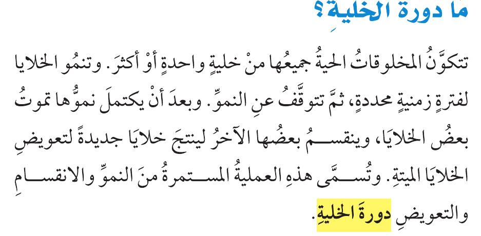
💡 الزبدة
دورة الخلية: العملية المستمرة من النمو والانقسام والتعويض. تنمو الخلية فترة محددة ثم تتوقف، وبعض الخلايا يموت، وبعضها ينقسم لينتج خلايا جديدة تعوّض الخلايا الميتة.
ص٥٢ · ما دورة الخلية؟
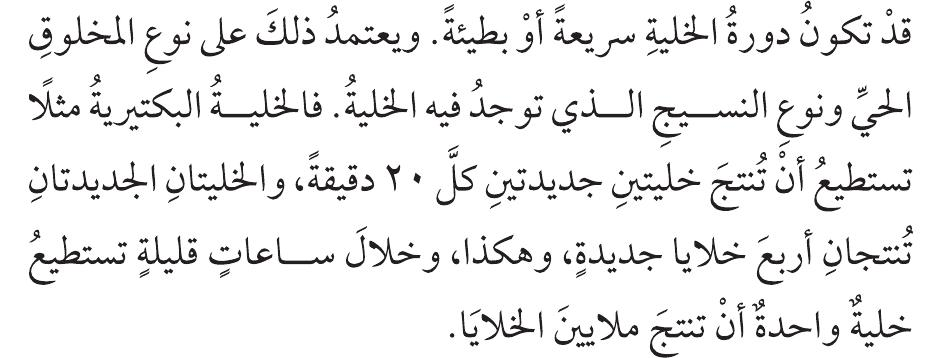
🔍 توضيح
سرعة دورة الخلية تعتمد على نوع المخلوق الحي ونوع النسيج. فالخلية البكتيرية مثلًا تنتج خليتين جديدتين كل ٢٠ دقيقة، وخلال ساعات قليلة تنتج ملايين الخلايا.
ص٥٢ · ما دورة الخلية؟
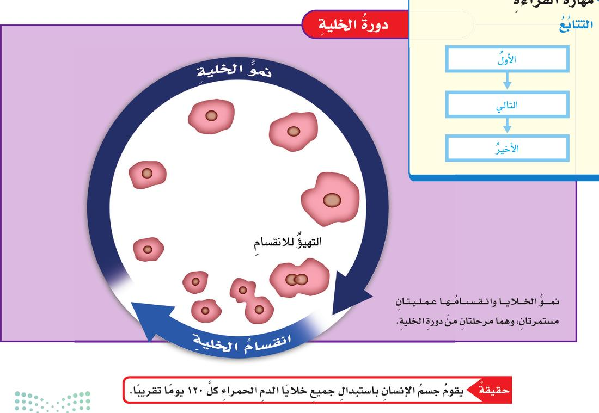
💡 الزبدة
مرحلتا دورة الخلية: نمو الخلية ثم انقسام الخلية، وهما عمليتان مستمرتان.
🔍 حقيقة
يستبدل جسم الإنسان جميع خلايا الدم الحمراء كل ١٢٠ يومًا تقريبًا.
ص٥٣ · حجم الخلية ومرض السرطان
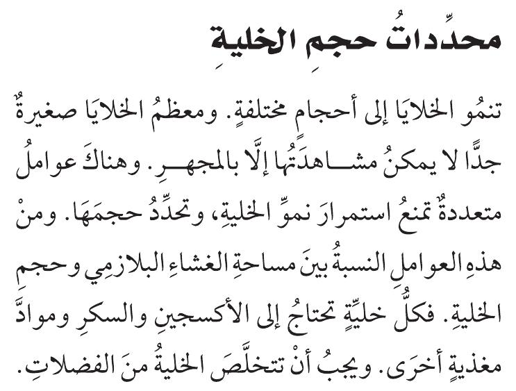
💡 الزبدة
للخلية حدّ أعلى للحجم. فهي تحتاج إلى الأكسجين والسكر ومواد مغذية أخرى، وتتخلص من الفضلات، وكل هذه المواد تمر عبر الغشاء البلازمي.
ص٥٣ · حجم الخلية ومرض السرطان
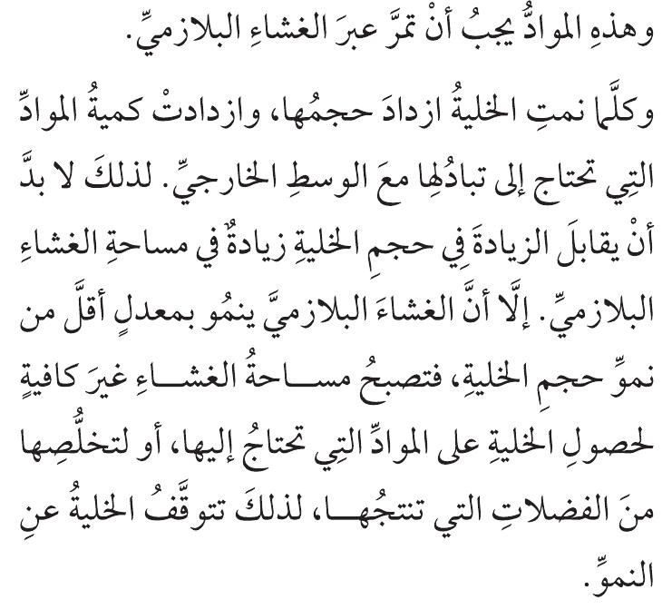
💡 الزبدة
كلما كبرت الخلية زادت حاجتها إلى المواد، لكن مساحة الغشاء البلازمي تنمو بمعدل أقل من نمو حجم الخلية، فتصبح غير كافية، لذلك تتوقف الخلية عن النمو.
⚠️ فخ في الاختبار
سبب توقف نمو الخلية: أن مساحة الغشاء البلازمي لا تكفي لحجمها.
ص٥٣ · حجم الخلية ومرض السرطان
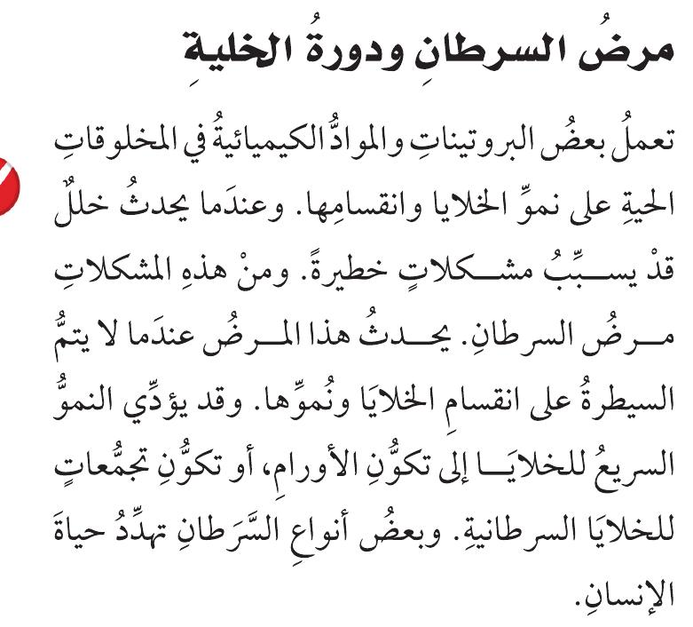
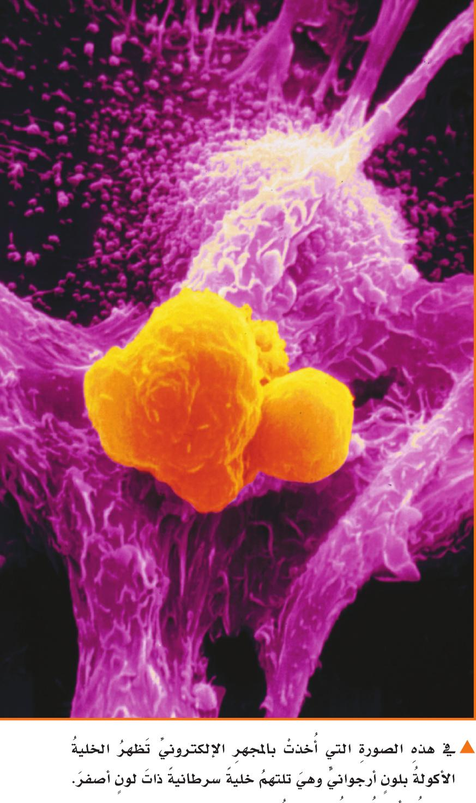
💡 الزبدة
مرض السرطان يحدث عندما لا تتم السيطرة على انقسام الخلايا ونموها، فيؤدي النمو السريع إلى تكوّن الأورام، وبعض أنواع السرطان تهدد حياة الإنسان.
🔍 توضيح
في الصورة المأخوذة بالمجهر الإلكتروني تلتهم الخلية الأكولة (الأرجوانية) خلية سرطانية (الصفراء)، والخلية الأكولة خلية دم بيضاء.
ص٥٣ · حجم الخلية ومرض السرطان
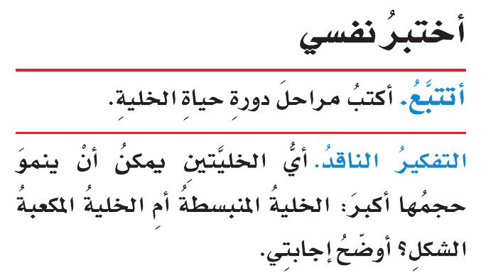
✍️ حلّ «أختبر نفسي»اضغطي لتري الإجابة
أتتبع: نمو الخلية ← انقسام الخلية، ثم تبدأ الدورة من جديد.
التفكير الناقد: الخلية المنبسطة؛ لأن مساحة غشائها البلازمي كبيرة بالنسبة إلى حجمها، فتحصل على ما تحتاج إليه من المواد.
التفكير الناقد: الخلية المنبسطة؛ لأن مساحة غشائها البلازمي كبيرة بالنسبة إلى حجمها، فتحصل على ما تحتاج إليه من المواد.
ص٥٤ · ما الانقسام المتساوي؟
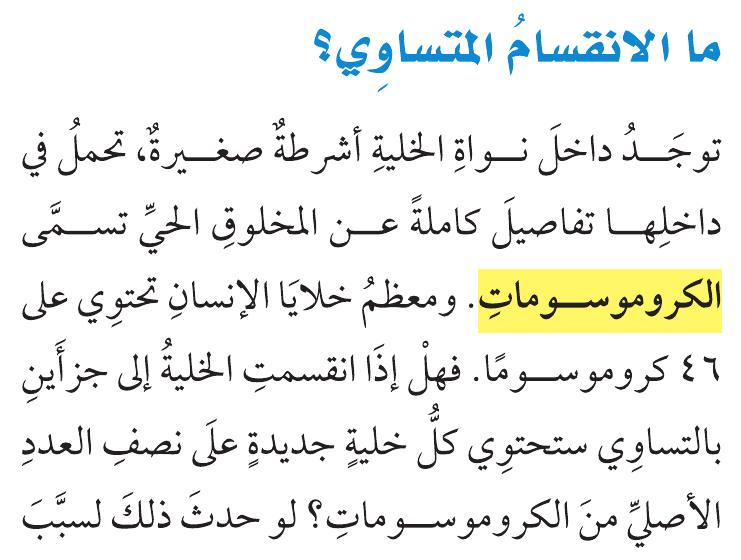
💡 الزبدة
الكروموسومات أشرطة صغيرة داخل نواة الخلية، تحمل تفاصيل كاملة عن المخلوق الحي. معظم خلايا الإنسان تحتوي على ٤٦ كروموسومًا.
ص٥٤ · ما الانقسام المتساوي؟
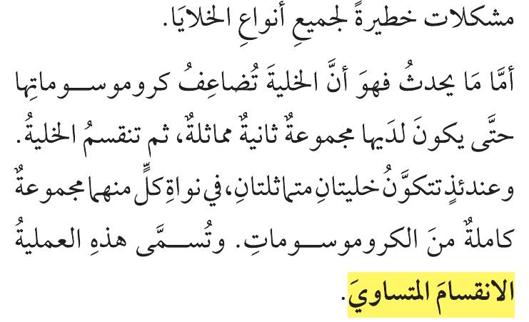
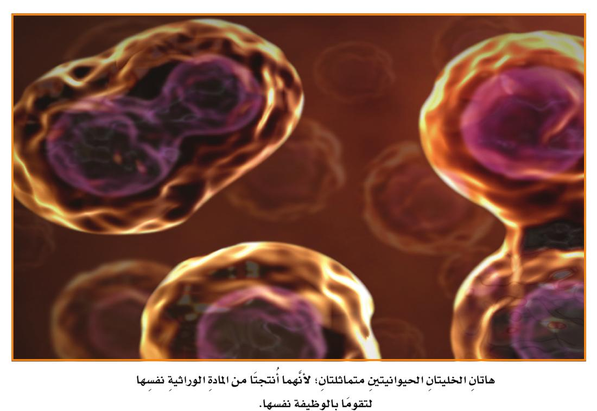
💡 الزبدة
الانقسام المتساوي: تضاعف الخلية كروموسوماتها حتى تكون لديها مجموعة ثانية مماثلة، ثم تنقسم، فتتكون خليتان متماثلتان في نواة كل منهما مجموعة كاملة من الكروموسومات.
⚠️ فخ في الاختبار
لو انقسمت الخلية دون أن تضاعف كروموسوماتها لاحتوت كل خلية جديدة على نصف العدد، وهذا يسبب مشكلات خطيرة.
ص٥٤ · ما الانقسام المتساوي؟
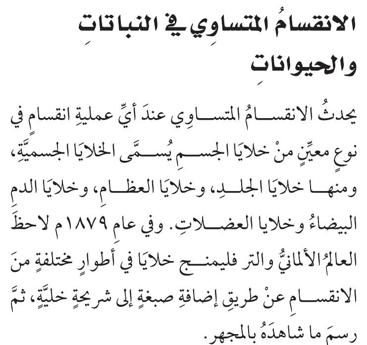
💡 الزبدة
يحدث الانقسام المتساوي في الخلايا الجسمية، ومنها خلايا الجلد والعظام وخلايا الدم البيضاء وخلايا العضلات.
🔍 توضيح
لاحظ العالم الألماني والتر فليمنج عام ١٨٧٩م خلايا في أطوار مختلفة من الانقسام بإضافة صبغة، ثم رسم ما شاهده بالمجهر.
ص٥٤ · ما الانقسام المتساوي؟
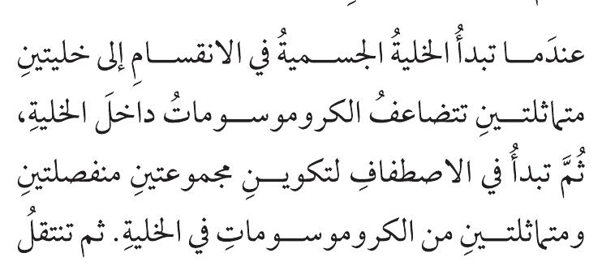
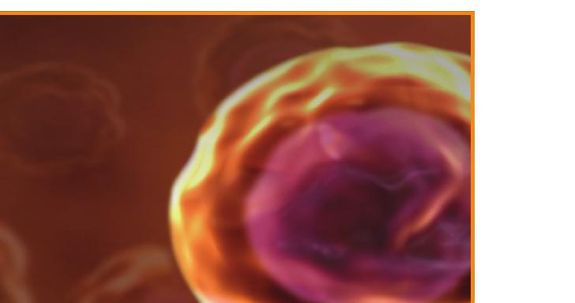
🔍 توضيح
تتضاعف الكروموسومات، ثم تبتعد مكوّنةً مجموعتين متماثلتين، وتنتقل كل مجموعة إلى طرف من الخلية، ثم تنقسم الخلية إلى خليتين كل منهما فيها مجموعة مماثلة تمامًا لكروموسومات الخلية الأصلية.
ص٥٥ · أطوار الانقسام المتساوي
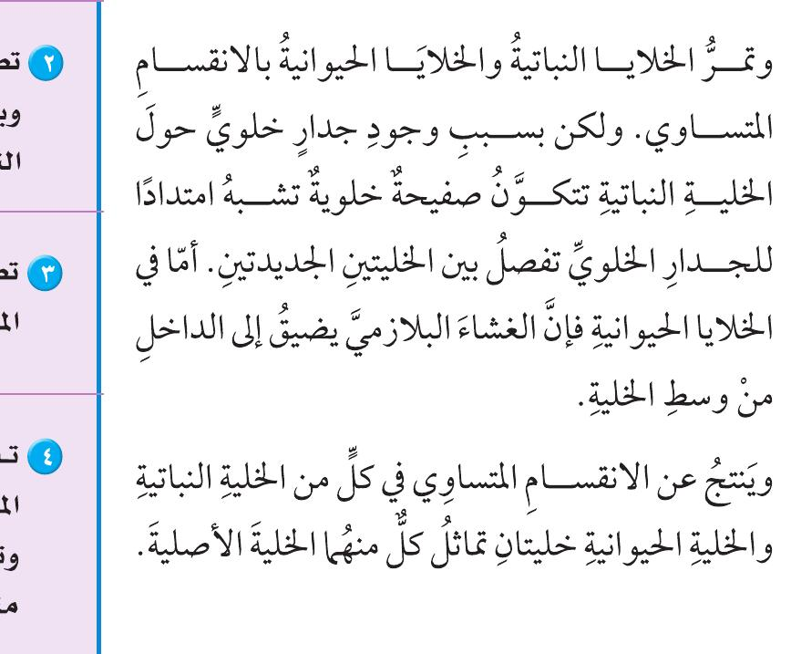
⚖️ انتبهي للفرق
الخلية النباتية
تتكون صفيحة خلوية تشبه امتدادًا للجدار الخلوي، تفصل بين الخليتين
الخلية الحيوانية
يضيق الغشاء البلازمي إلى الداخل من وسط الخلية
ص٥٥ · أطوار الانقسام المتساوي
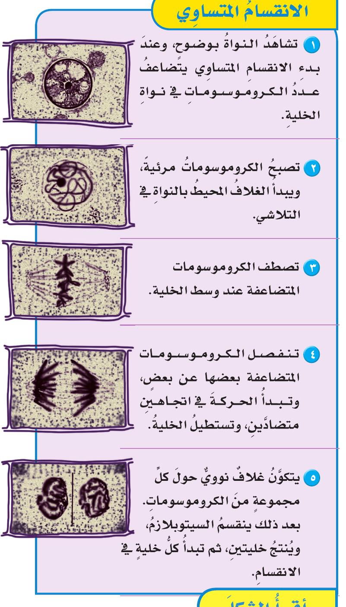
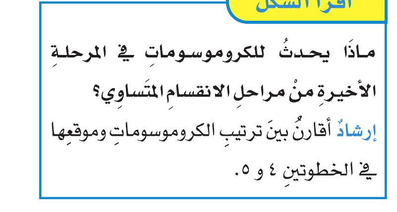
🔍 الأطوار بالترتيب
١- تتضاعف الكروموسومات في النواة.
٢- تصبح الكروموسومات مرئية، ويبدأ غلاف النواة في التلاشي.
٣- تصطف الكروموسومات عند وسط الخلية.
٤- تنفصل الكروموسومات وتتحرك في اتجاهين متضادين، وتستطيل الخلية.
٥- يتكون غلاف نووي حول كل مجموعة، وينقسم السيتوبلازم، فتنتج خليتان.
٢- تصبح الكروموسومات مرئية، ويبدأ غلاف النواة في التلاشي.
٣- تصطف الكروموسومات عند وسط الخلية.
٤- تنفصل الكروموسومات وتتحرك في اتجاهين متضادين، وتستطيل الخلية.
٥- يتكون غلاف نووي حول كل مجموعة، وينقسم السيتوبلازم، فتنتج خليتان.
✍️ حلّ «أقرأ الشكل»اضغطي لتري الإجابة
في المرحلة الأخيرة يتكون غلاف نووي حول كل مجموعة من الكروموسومات.
ص٥٥ · أطوار الانقسام المتساوي
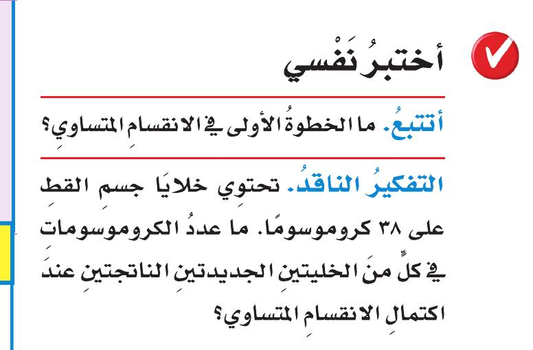
✍️ حلّ «أختبر نفسي»اضغطي لتري الإجابة
أتتبع: تتضاعف الكروموسومات في نواة الخلية.
التفكير الناقد: ٣٨ كروموسومًا في كل خلية؛ لأن الانقسام المتساوي ينتج خليتين مماثلتين للخلية الأصلية.
التفكير الناقد: ٣٨ كروموسومًا في كل خلية؛ لأن الانقسام المتساوي ينتج خليتين مماثلتين للخلية الأصلية.
ص٥٦ · ما الانقسام المنصف؟
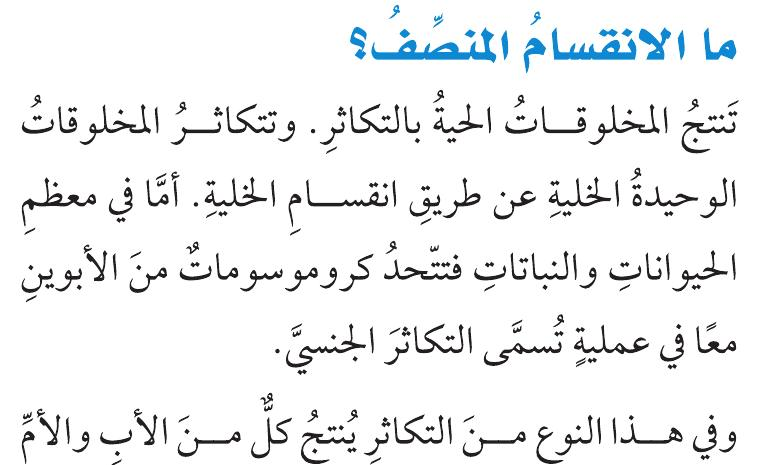
💡 الزبدة
المخلوقات وحيدة الخلية تتكاثر بانقسام الخلية. أما معظم الحيوانات والنباتات فتتحد فيها كروموسومات من الأبوين معًا في عملية تسمى التكاثر الجنسي.
ص٥٦ · ما الانقسام المنصف؟
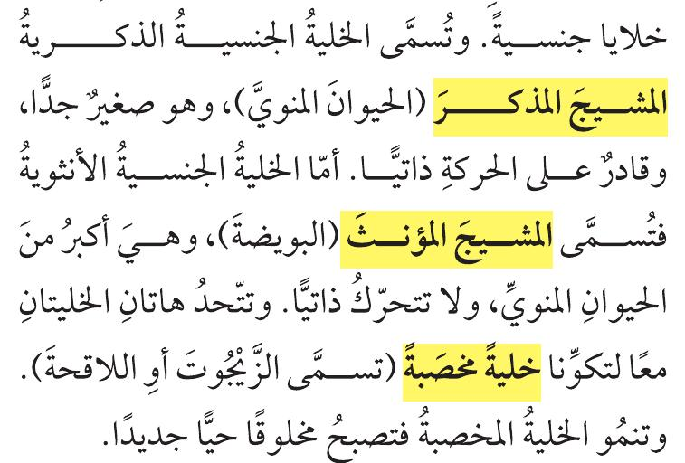
⚖️ انتبهي للفرق
المشيج المذكر (الحيوان المنوي)
صغير جدًا
قادر على الحركة ذاتيًا
المشيج المؤنث (البويضة)
أكبر من الحيوان المنوي
لا يتحرك ذاتيًا
💡 الزبدة
يتحدان فتتكون الخلية المخصبة (الزيجوت أو اللاقحة)، وتنمو لتصبح مخلوقًا حيًا جديدًا.
ص٥٦ · ما الانقسام المنصف؟
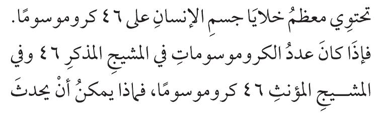
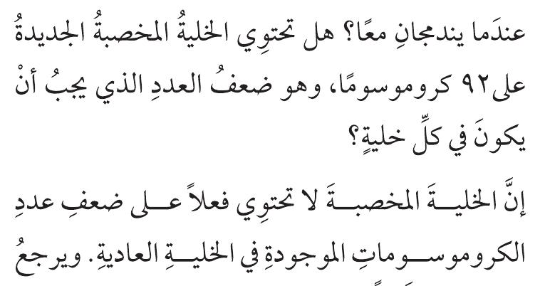
🔍 توضيح
لو كان في كل مشيج ٤٦ كروموسومًا لاحتوت الخلية المخصبة على ٩٢، وهو ضعف العدد الذي يجب أن يكون في كل خلية!
ص٥٦ · ما الانقسام المنصف؟
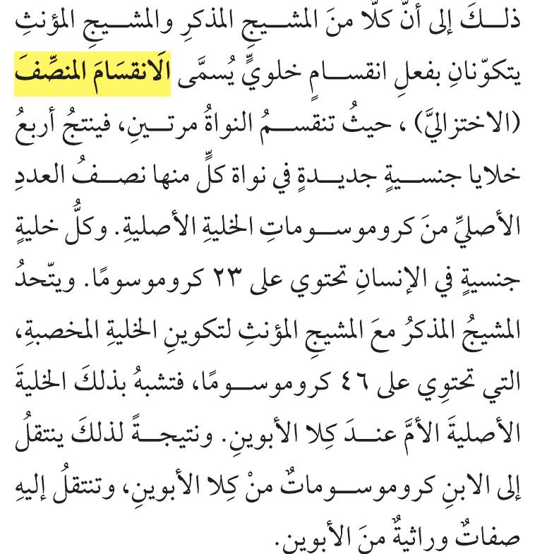
💡 الزبدة
الانقسام المنصف (الاختزالي): تنقسم النواة مرتين، فتنتج أربع خلايا جنسية في نواة كل منها نصف العدد الأصلي من الكروموسومات. وفي الإنسان تحتوي كل خلية جنسية على ٢٣ كروموسومًا.
⚠️ فخ في الاختبار
٢٣ من الأب + ٢٣ من الأم = ٤٦ في الخلية المخصبة، فتنتقل إلى الابن صفات وراثية من الأبوين.
ص٥٦ · ما الانقسام المنصف؟
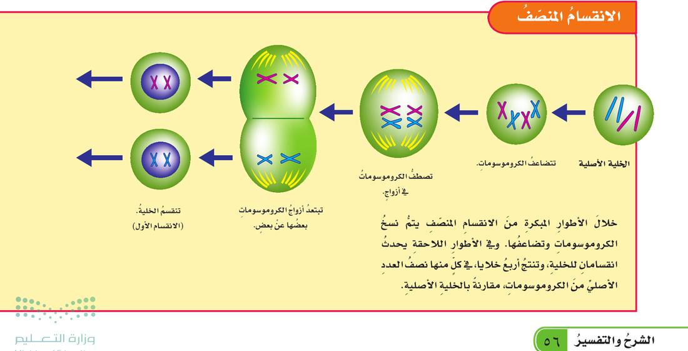
🔍 توضيح
في الأطوار المبكرة من الانقسام المنصف تُنسخ الكروموسومات وتتضاعف، وفي الأطوار اللاحقة يحدث انقسامان، وتنتج أربع خلايا.
ص٥٧ · المقارنة بين الانقسامين
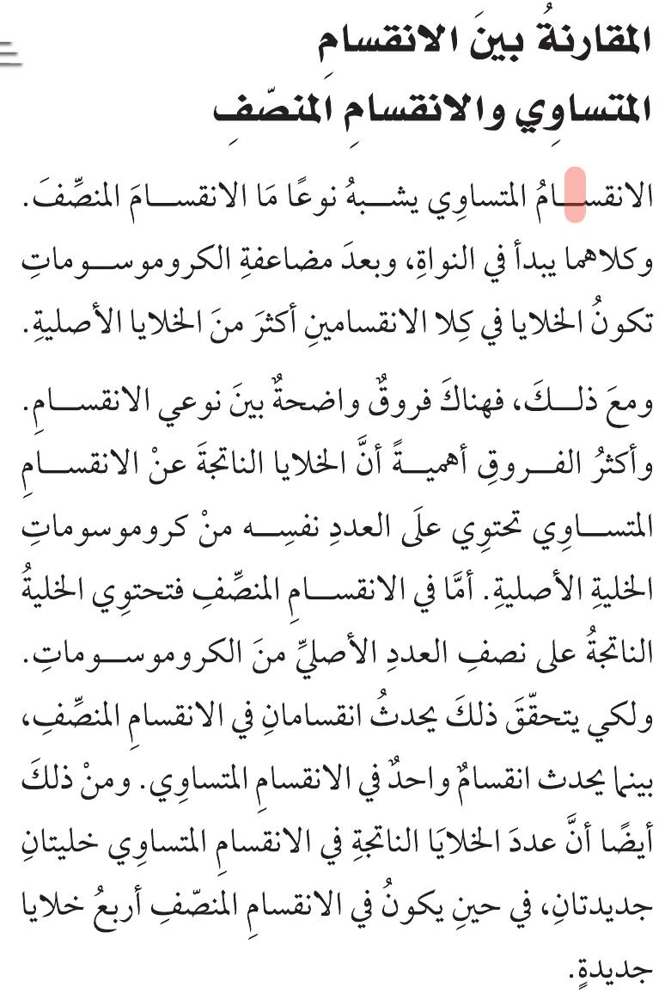
⚖️ انتبهي للفرق
المتساوي
عدد الانقساماتانقسام واحد
الخلايا الناتجةخليتان
عدد الكروموسوماتالعدد نفسه للخلية الأصلية
المنصف
عدد الانقساماتانقسامان
الخلايا الناتجةأربع خلايا
عدد الكروموسوماتنصف العدد الأصلي
💡 يتشابهان في
كلاهما يبدأ في النواة، وبعد مضاعفة الكروموسومات، وتتكون فيهما الخلايا أكثر من الخلية الأصلية.
ص٥٧ · المقارنة بين الانقسامين
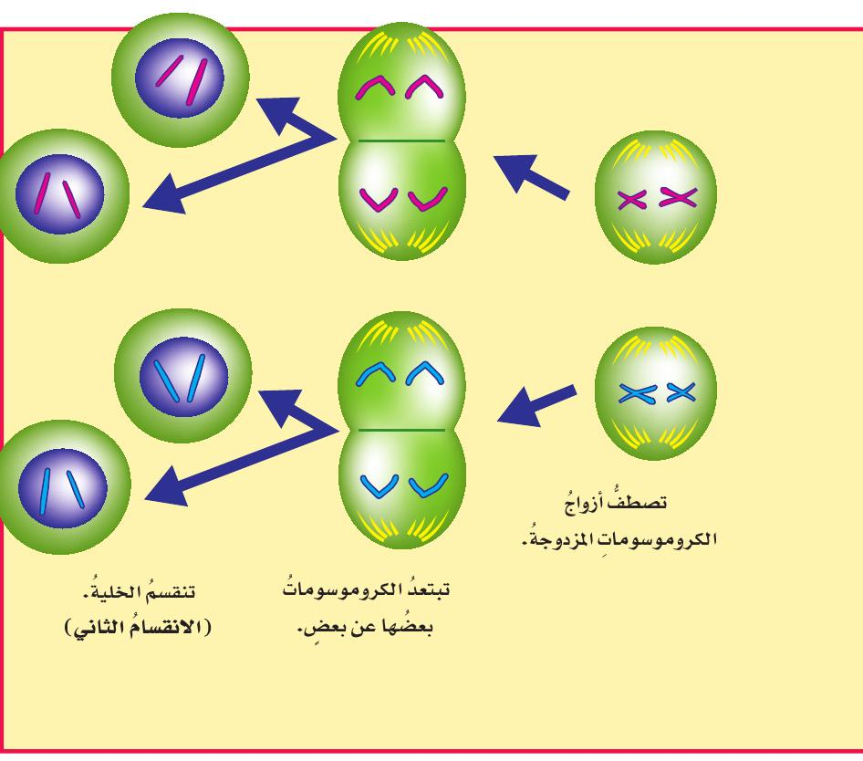
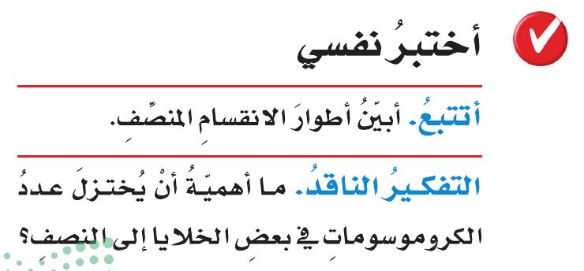
✍️ حلّ «أختبر نفسي»اضغطي لتري الإجابة
أتتبع: تُنسخ الكروموسومات وتتضاعف ← تصطف أزواج الكروموسومات ← تبتعد الأزواج ← تنقسم الخلية (الانقسام الأول) ← تصطف الكروموسومات ← تبتعد ← تنقسم الخلية (الانقسام الثاني) فتنتج أربع خلايا.
التفكير الناقد: حتى تحتوي الخلية المخصبة على العدد الأصلي من الكروموسومات عند اتحاد المشيجين.
التفكير الناقد: حتى تحتوي الخلية المخصبة على العدد الأصلي من الكروموسومات عند اتحاد المشيجين.
ص٥٨ · ما مدة الحياة؟
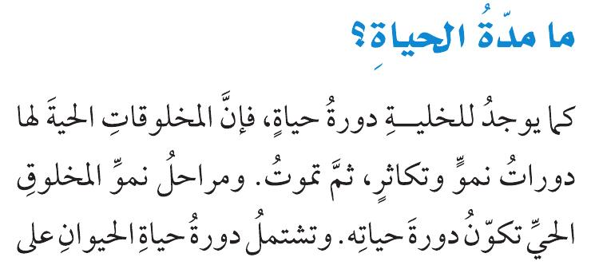
💡 الزبدة
دورة الحياة: مراحل نمو المخلوق الحي. وتشمل دورة حياة الحيوان: الولادة، والنضج، والتكاثر، والهرم، والموت.
ص٥٨ · ما مدة الحياة؟
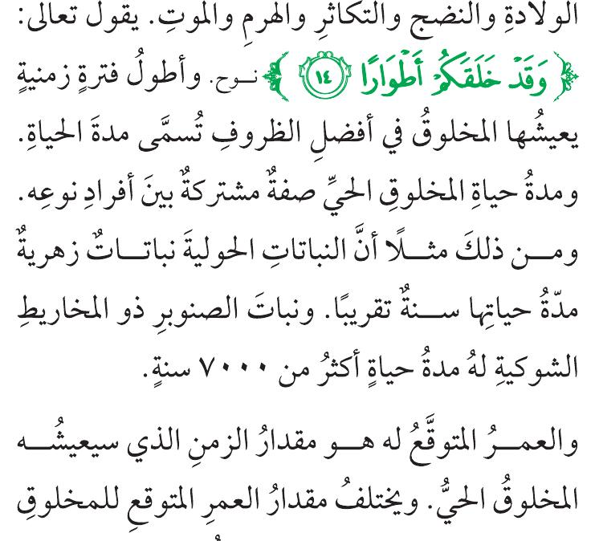
⚖️ انتبهي للفرق
مدة الحياة
أطول فترة زمنية يعيشها المخلوق في أفضل الظروف
صفة مشتركة بين أفراد النوع
العمر المتوقع
مقدار الزمن الذي سيعيشه المخلوق الحي
يختلف حسب الظروف التي يعيشها
🔍 توضيح
مدة حياة بعض النباتات الحولية سنة تقريبًا، ومدة حياة نبات الصنوبر ذي المخاريط الشوكية أكثر من ٧٠٠٠ سنة.
ص٥٨ · ما مدة الحياة؟
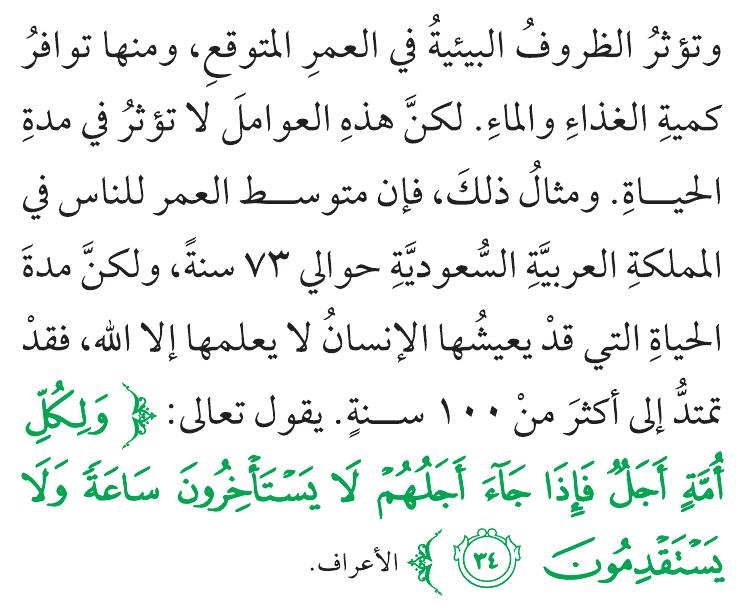
⚠️ فخ في الاختبار
الظروف البيئية، ومنها توافر الغذاء والماء، تؤثر في العمر المتوقع، ولا تؤثر في مدة الحياة.
🔍 توضيح
متوسط العمر للناس في المملكة العربية السعودية حوالي ٧٣ سنة.
ص٥٨ · ما مدة الحياة؟
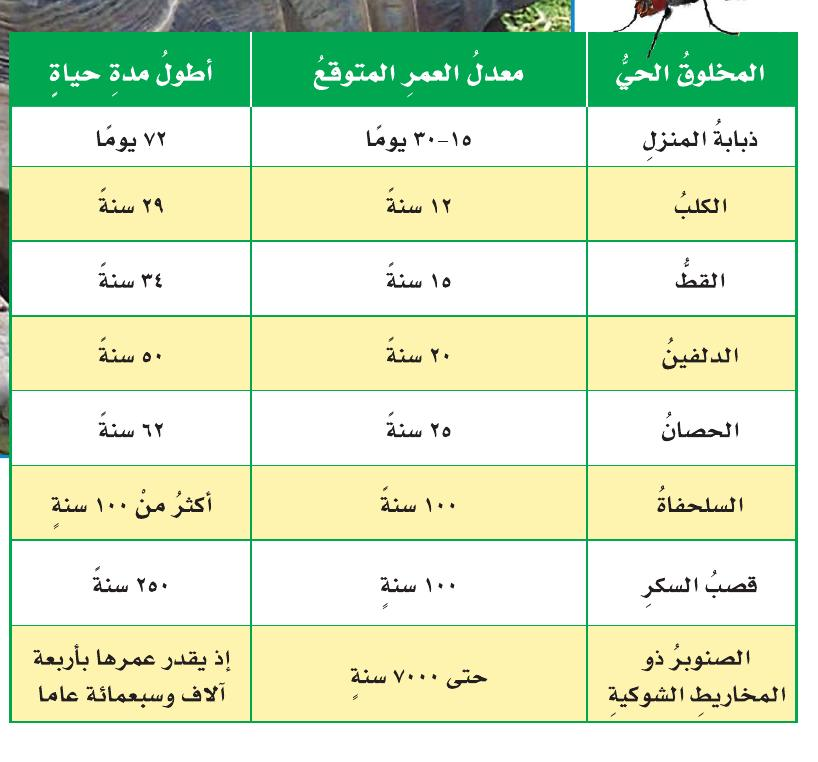
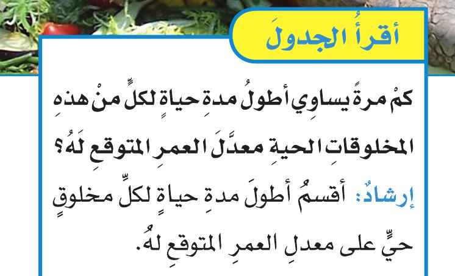
✍️ حلّ «أقرأ الجدول»اضغطي لتري الإجابة
اقسمي أطول مدة حياة على معدل العمر المتوقع. مثال: الدلفين ٥٠ ÷ ٢٠ = ٢٫٥ مرة.
ص٥٨ · ما مدة الحياة؟
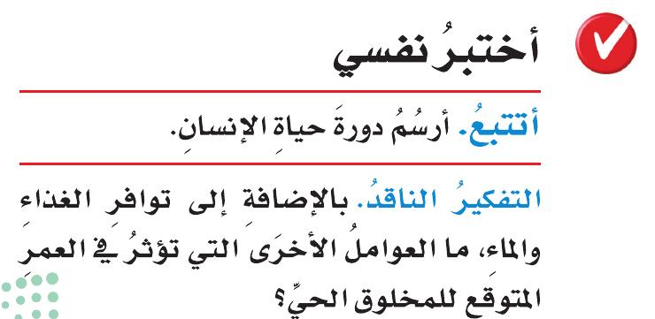
✍️ حلّ «أختبر نفسي»اضغطي لتري الإجابة
أتتبع: الولادة ← النضج ← التكاثر ← الهرم ← الموت.
التفكير الناقد: الظروف البيئية الأخرى التي يعيشها المخلوق الحي.
التفكير الناقد: الظروف البيئية الأخرى التي يعيشها المخلوق الحي.
📌 الخلاصة · خريطة المفاهيم
🔬 الخليةفي نواتها كروموسومات (٤٦ في الإنسان)
⬇
📈 تنموحتى لا تكفي مساحة الغشاء البلازمي
⬇ثم
➗ تنقسمانقسام متساوي أو منصف
⬇فينمو المخلوق ويتكاثر
🐣 دورة الحياةولادة · نضج · تكاثر · هرم · موت
الانقسام المتساوي
- في الخلايا الجسمية
- انقسام واحد
- خليتان بالعدد نفسه
الانقسام المنصف
- يكوّن الأمشاج
- انقسامان
- أربع خلايا بنصف العدد
📌 الخلاصة · أرقام مهمة
🔢٤٦
ماذا يعني؟عدد الكروموسومات في معظم خلايا الإنسان، وفي الخلية المخصبة
🔢٢٣
ماذا يعني؟عدد الكروموسومات في كل خلية جنسية (المشيج)
⏱️٢٠ دقيقة
ماذا يعني؟الخلية البكتيرية تنتج خليتين جديدتين كل ٢٠ دقيقة
🩸١٢٠ يومًا
ماذا يعني؟يستبدل الجسم جميع خلايا الدم الحمراء كل ١٢٠ يومًا تقريبًا
📌 الخلاصة · لا تخلطي بينها
الانقسام المتساوي
عدد الانقساماتواحد
الخلايا الناتجةخليتان متماثلتان
الكروموسومات في الإنسان٤٦ في كل خلية
الانقسام المنصف
عدد الانقساماتاثنان
الخلايا الناتجةأربع خلايا جنسية
الكروموسومات في الإنسان٢٣ في كل خلية
📌 الخلاصة · لا تخلطي بينها
مدة الحياة
تعريفهاأطول فترة يعيشها المخلوق في أفضل الظروف
تتأثر بالظروف؟لا
العمر المتوقع
تعريفهامقدار الزمن الذي سيعيشه المخلوق
تتأثر بالظروف؟نعم
📌 الخلاصة · أهم النقاط
- دورة الخلية: نمو ثم انقسام، وتتوقف الخلية عن النمو حين لا تكفي مساحة غشائها البلازمي.
- السرطان: نمو سريع للخلايا دون سيطرة يكوّن الأورام.
- الانقسام المتساوي في الخلايا الجسمية: خليتان متماثلتان، في كل منهما ٤٦ كروموسومًا في الإنسان.
- الانقسام المنصف يكوّن الأمشاج: أربع خلايا بنصف العدد (٢٣)، ويتحد المشيجان فتتكون الخلية المخصبة (٤٦).
- مدة الحياة ثابتة للنوع، والعمر المتوقع يتأثر بالظروف.
🧠 اختبري نفسك · ١ من ٤
كم كروموسومًا في خلية جلد الإنسان؟ وكم كروموسومًا في البويضة؟
✅ الجوابفكّري ثم اضغطي
خلية الجلد ٤٦، والبويضة ٢٣.
🧠 اختبري نفسك · ٢ من ٤
أي الانقسامين ينتج أربع خلايا؟
✅ الجوابفكّري ثم اضغطي
الانقسام المنصف.
🧠 اختبري نفسك · ٣ من ٤
لماذا تتوقف الخلية عن النمو؟
✅ الجوابفكّري ثم اضغطي
لأن مساحة الغشاء البلازمي تصبح غير كافية لحصول الخلية على ما تحتاج إليه من المواد.
🧠 اختبري نفسك · ٤ من ٤
صواب أم خطأ: توافر الغذاء والماء يؤثر في مدة الحياة.
✅ الجوابفكّري ثم اضغطي
خطأ؛ يؤثر في العمر المتوقع، ولا يؤثر في مدة الحياة.
🌟
أحسنتِ!
أنهيتِ الدرس. ثبّتي ما تعلمتِه باللعب.
🎮 العبي ألعاب الدرس في «نجمات العلوم»📄 الدرس ملف PDF 📚 دروس الكتاب